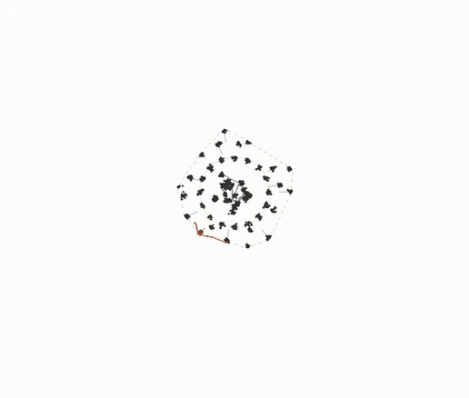
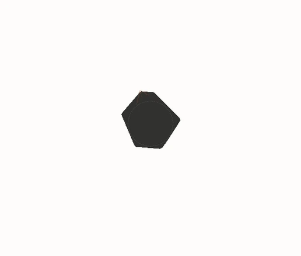

Humans only alongside AI ruins serendipity: AI fills existing gaps, but new human discoveries become less frequent. Rust markers are new discoveries: diamonds for humans, triangles for AI. Charcoal regions are filled knowledge. Shapes use the same spatial scale across both figures. The plots show filled area over time on a shared linear scale, except RSI, which uses ten times the vertical range.
Humans only

AI ruins serendipity

Loading the comparison.